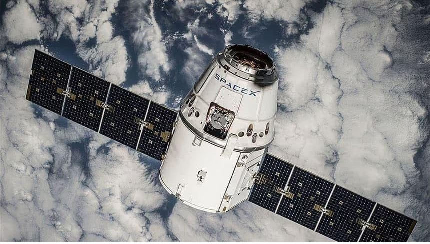

The Interplay between Technology and Society
Introduction
Today the global infrastructure of the internet is, to a large degree, dependent on physical subsea and underground cables. Despite the global nature of the internet, the very fact that it relies on physical cables makes its flow of information sometimes subject to national borders. One recent example of this is the new Norwegian E-Law (2020), which proposes that the intelligence service can monitor and collect all data that goes across the national border.
As society becomes increasingly digitized, internet cables can also be seen as critical infrastructure. Internet cables, both in the North-Sea and off the coast of Taiwan are suspected to have been deliberately sabotaged.
An estimated 2,5 billion people in the world do not yet have access to the internet. To overcome the physical limitations of internet cables, companies like Starlink and the EU are working on providing internet access through satellites. Elon Musk’s Starlink is today the largest global provider of satellite internet with over 4,500 satellites in orbit. They expect to have 42,000 new ones in orbit in the coming years.
The Situation
The aim of satellite internet technology is to globalize internet accessibility, regardless of where people live. This will give many more people access to the internet, and furthermore access to a wide variety of information. Satellite internet technology provides faster internet access to some areas and reduced latency over longer distances. It does not depend on infrastructure such as cables and towers which makes it less prone to natural disaster or terrorism. However, some aspects such as security and unwanted consequences will need to be considered when developing this technology.
Professions within information technology will benefit from increased internet accessibility around the world, as these professions are often dependent on digital technology and the internet. A higher demand for people within information technology is highly likely.
More people worldwide will be able to have online education and access to information through increased internet accessibility. This can result in faster resolution of global problems. By bringing the world closer together, it grants possibilities for better cooperation and collaboration. Nevertheless, the same negative consequences from the internet will still exist. For example, people can become addicted to it, and it can lead to a decrease in physical activity, which may lead to health problems. New technology is a good thing since it brings in different alternatives and convenience to many subjects. For example, people can get better help at becoming more physically active through the use of apps and video tutorials of different ways to exercise.
Positives and Negatives
Three positive aspects of increased internet access:
- It enables people who live in remote areas to have online access to education, healthcare information and business opportunities.
- It will promote better social and economic development in different parts of the world.
- Authorities will have a harder time ruling through dictatorship, as people can more easily gather and find others willing to revoke. More diversity in media will also be obtained, preventing authorities having full control over what people consume of information.
Three negative aspects of increased internet access:
- Those who own this technology will have more power and can abuse that power by controlling people's access to information.
- Centralization of power can lead to larger consequences when hacking or interference occur.
- If this technology arrives too fast, it can overwhelm society, and it can cause disruption which might lead to other negative consequences unrelated to internet technologies.